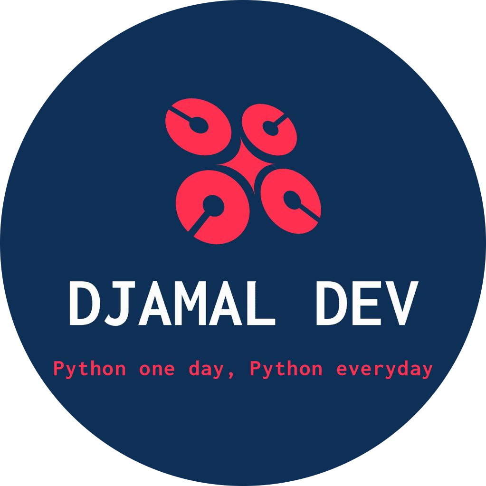
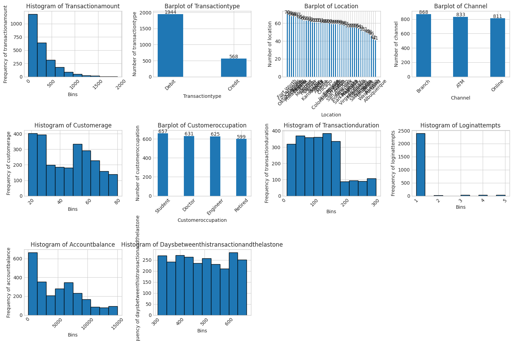
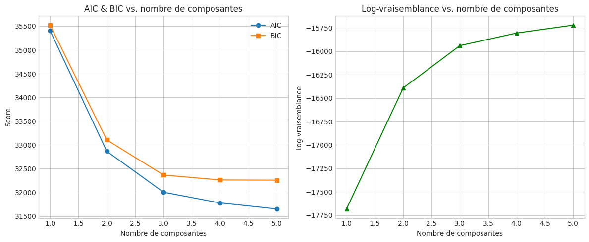
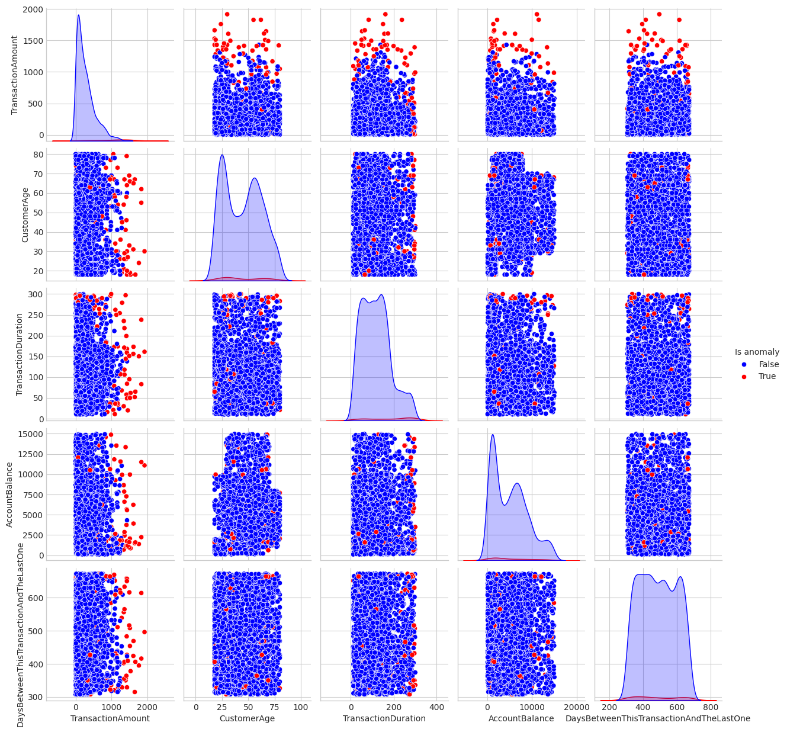

| Unnamed: 0 | TransactionID | AccountID | TransactionAmount | TransactionDate | TransactionType | Location | DeviceID | IP Address | MerchantID | Channel | CustomerAge | CustomerOccupation | TransactionDuration | LoginAttempts | AccountBalance | PreviousTransactionDate | |
|---|---|---|---|---|---|---|---|---|---|---|---|---|---|---|---|---|---|
| 0 | 0 | TX000001 | AC00128 | 14.09 | 2023-04-11 16:29:14 | Debit | San Diego | D000380 | 162.198.218.92 | M015 | ATM | 70 | Doctor | 81 | 1 | 5112.21 | 2024-11-04 08:08:08 |
| 1 | 1 | TX000002 | AC00455 | 376.24 | 2023-06-27 16:44:19 | Debit | Houston | D000051 | 13.149.61.4 | M052 | ATM | 68 | Doctor | 141 | 1 | 13758.91 | 2024-11-04 08:09:35 |
| 2 | 2 | TX000003 | AC00019 | 126.29 | 2023-07-10 18:16:08 | Debit | Mesa | D000235 | 215.97.143.157 | M009 | Online | 19 | Student | 56 | 1 | 1122.35 | 2024-11-04 08:07:04 |
| 3 | 3 | TX000004 | AC00070 | 184.50 | 2023-05-05 16:32:11 | Debit | Raleigh | D000187 | 200.13.225.150 | M002 | Online | 26 | Student | 25 | 1 | 8569.06 | 2024-11-04 08:09:06 |
| 4 | 4 | TX000005 | AC00411 | 13.45 | 2023-10-16 17:51:24 | Credit | Atlanta | D000308 | 65.164.3.100 | M091 | Online | 26 | Student | 198 | 1 | 7429.40 | 2024-11-04 08:06:39 |

Détection d’anomalies dans les transactions banquaires
Introduction
La détection de fraudes sur les transactions bancaires est un enjeu majeur pour les institutions financières. Les méthodes traditionnelles basées sur des règles statiques peinent à s’adapter aux schémas de fraude de plus en plus sophistiqués. Dès 2002, Bolton & Hand ont proposé un modèle statistique pour identifier les anomalies transactionnelles (Bolton and Hand 2002). Depuis, de nombreuses approches ont émergé, à la fois supervisées et non supervisées, offrant des performances variables selon la disponibilité de données étiquetées, la diversité des comportements normaux et la capacité à détecter de nouvelles formes de fraude (Phua et al. 2010; Ngai et al. 2011; Chalapathy and Chawla 2019).
Note
Le notebook ainsi que toutes ses dépendances sont disponibles sur GitHub :
Cliquez ici pour accéder au dépôt
Méthodologie
Pour ce mini-projet, nous adopterons une approche non supervisée utilisant un Gaussian Mixture Model (
GMM). Le GMM permet de modéliser la distribution sous-jacente des transactions légitimes par une combinaison de gaussiennes, et d’identifier les observations présentant une faible vraisemblance comme anomalies (Bishop 2006).Les étapes principales sont:
Prétraitement des données:
Sélection des variables pertinentes (montant, temporalité, etc.);
Nettoyage, transformation et mise à l’échelle (Hastie et al. 2009)
Estimation du GMM:
Choix du nombre de composantes par critères AIC/BIC (Schwarz 1978)
Ajustement du modèle sur les données normalisées
Détection des anomalies:
Calcul de la log-vraisemblance pour chaque transaction
Définition d’un seuil basé sur un percentile (par exemple 1%) pour isoler les transactions suspectes (Ngai et al. 2011)
Pratique
About Dataset (From kaggle (link))
\(\quad\) This dataset provides a detailed look into transactional behavior and financial activity patterns, ideal for exploring fraud detection and anomaly identification. It contains 2,512 samples of transaction data, covering various transaction attributes, customer demographics, and usage patterns. Each entry offers comprehensive insights into transaction behavior, enabling analysis for financial security and fraud detection applications.
Key Features:
TransactionID: Unique alphanumeric identifier for each transaction.AccountID: Unique identifier for each account, with multiple transactions per account.TransactionAmount: Monetary value of each transaction, ranging from small everyday expenses to larger purchases.TransactionDate: Timestamp of each transaction, capturing date and time.TransactionType: Categorical field indicating ‘Credit’ or ‘Debit’ transactions.Location: Geographic location of the transaction, represented by U.S. city names.DeviceID: Alphanumeric identifier for devices used to perform the transaction.IP Address: IPv4 address associated with the transaction, with occasional changes for some accounts.MerchantID: Unique identifier for merchants, showing preferred and outlier merchants for each account.AccountBalance: Balance in the account post-transaction, with logical correlations based on transaction type and amount.PreviousTransactionDate: Timestamp of the last transaction for the account, aiding in calculating transaction frequency.Channel: Channel through which the transaction was performed (e.g., Online, ATM, Branch).CustomerAge: Age of the account holder, with logical groupings based on occupation.CustomerOccupation: Occupation of the account holder (e.g., Doctor, Engineer, Student, Retired), reflecting income patterns.TransactionDuration: Duration of the transaction in seconds, varying by transaction type.LoginAttempts: Number of login attempts before the transaction, with higher values indicating potential anomalies.
This dataset is ideal for data scientists, financial analysts, and researchers looking to analyze transactional patterns, detect fraud, and build predictive models for financial security applications. The dataset was designed for machine learning and pattern analysis tasks and is not intended as a primary data source for academic publications.
<class 'pandas.DataFrame'>
RangeIndex: 2512 entries, 0 to 2511
Data columns (total 17 columns):
# Column Non-Null Count Dtype
--- ------ -------------- -----
0 Unnamed: 0 2512 non-null int64
1 TransactionID 2512 non-null str
2 AccountID 2512 non-null str
3 TransactionAmount 2512 non-null float64
4 TransactionDate 2512 non-null str
5 TransactionType 2512 non-null str
6 Location 2512 non-null str
7 DeviceID 2512 non-null str
8 IP Address 2512 non-null str
9 MerchantID 2512 non-null str
10 Channel 2512 non-null str
11 CustomerAge 2512 non-null int64
12 CustomerOccupation 2512 non-null str
13 TransactionDuration 2512 non-null int64
14 LoginAttempts 2512 non-null int64
15 AccountBalance 2512 non-null float64
16 PreviousTransactionDate 2512 non-null str
dtypes: float64(2), int64(4), str(11)
memory usage: 586.9 KBUnnamed: 0 0
TransactionID 0
AccountID 0
TransactionAmount 0
TransactionDate 0
TransactionType 0
Location 0
DeviceID 0
IP Address 0
MerchantID 0
Channel 0
CustomerAge 0
CustomerOccupation 0
TransactionDuration 0
LoginAttempts 0
AccountBalance 0
PreviousTransactionDate 0
dtype: int64\(\quad\) Certaines variables, bien que nettoyées et sans valeurs manquantes, n’ont pas été exploitées dans l’analyse principale :
- TransactionID
- AccountID
- DeviceID
- IP Address
- MerchantID
Toutefois, selon l’objectif visé, certaines d’entre elles pourraient s’avérer très pertinentes:
- AccountID: détection de comptes à risque, suivi des comportements de chaque titulaire,
- IP Address: analyse spatiale et traçage géographique des connexions,
- MerchantID: étude du comportement des commerçants et détection d’anomalies spécifiques à certains points de vente.
Pour des raisons éthiques, ces détails ne seront pas explorées dans le cadre de cet mini-projet, car nous ne savons pas si les ID sont réels ou pas.
| TransactionAmount | TransactionDate | TransactionType | Location | Channel | CustomerAge | CustomerOccupation | TransactionDuration | LoginAttempts | AccountBalance | PreviousTransactionDate | |
|---|---|---|---|---|---|---|---|---|---|---|---|
| 0 | 14.09 | 2023-04-11 16:29:14 | Debit | San Diego | ATM | 70 | Doctor | 81 | 1 | 5112.21 | 2024-11-04 08:08:08 |
| 1 | 376.24 | 2023-06-27 16:44:19 | Debit | Houston | ATM | 68 | Doctor | 141 | 1 | 13758.91 | 2024-11-04 08:09:35 |
| 2 | 126.29 | 2023-07-10 18:16:08 | Debit | Mesa | Online | 19 | Student | 56 | 1 | 1122.35 | 2024-11-04 08:07:04 |
| 3 | 184.50 | 2023-05-05 16:32:11 | Debit | Raleigh | Online | 26 | Student | 25 | 1 | 8569.06 | 2024-11-04 08:09:06 |
| 4 | 13.45 | 2023-10-16 17:51:24 | Credit | Atlanta | Online | 26 | Student | 198 | 1 | 7429.40 | 2024-11-04 08:06:39 |
Les variables
TransactionDate et PreviousTransactionDate peuvent nous servir à calculer une variables plus informative et utilisable qui est TimeBetweenThisTransactionAndTheLastOne qui pourrait être en heures ou en secondes en fonction des valeurs obtenues de la différence entre ces deux dates.| TransactionAmount | TransactionType | Location | Channel | CustomerAge | CustomerOccupation | TransactionDuration | LoginAttempts | AccountBalance | TimeBetweenThisTransactionAndTheLastOne | |
|---|---|---|---|---|---|---|---|---|---|---|
| 0 | 14.09 | Debit | San Diego | ATM | 70 | Doctor | 81 | 1 | 5112.21 | 13743.65 |
| 1 | 376.24 | Debit | Houston | ATM | 68 | Doctor | 141 | 1 | 13758.91 | 11895.42 |
| 2 | 126.29 | Debit | Mesa | Online | 19 | Student | 56 | 1 | 1122.35 | 11581.85 |
| 3 | 184.50 | Debit | Raleigh | Online | 26 | Student | 25 | 1 | 8569.06 | 13167.62 |
| 4 | 13.45 | Credit | Atlanta | Online | 26 | Student | 198 | 1 | 7429.40 | 9230.25 |
count 2512.000000
mean 11699.619928
std 2553.112387
min 7381.750000
25% 9469.435000
50% 11654.350000
75% 13935.792500
max 16120.190000
Name: TimeBetweenThisTransactionAndTheLastOne, dtype: float64On pourrait même convertir cela en nombre de jours car le minimum est de 7381.75 heures.
| TransactionAmount | TransactionType | Location | Channel | CustomerAge | CustomerOccupation | TransactionDuration | LoginAttempts | AccountBalance | DaysBetweenThisTransactionAndTheLastOne | |
|---|---|---|---|---|---|---|---|---|---|---|
| 0 | 14.09 | Debit | San Diego | ATM | 70 | Doctor | 81 | 1 | 5112.21 | 573.0 |
| 1 | 376.24 | Debit | Houston | ATM | 68 | Doctor | 141 | 1 | 13758.91 | 496.0 |
| 2 | 126.29 | Debit | Mesa | Online | 19 | Student | 56 | 1 | 1122.35 | 483.0 |
| 3 | 184.50 | Debit | Raleigh | Online | 26 | Student | 25 | 1 | 8569.06 | 549.0 |
| 4 | 13.45 | Credit | Atlanta | Online | 26 | Student | 198 | 1 | 7429.40 | 385.0 |
count 2512.000000
mean 487.857882
std 106.378910
min 308.000000
25% 395.000000
50% 486.000000
75% 581.000000
max 672.000000
Name: DaysBetweenThisTransactionAndTheLastOne, dtype: float64 Il est apparaît surprenant que qu’il y’ai autant de jour entre deux transaction. Nous n’avons pas fait d’erreur de calcul car si vous monter un peu plus haut et en regardant les colonnes
TransactionDate and PreviousTransactionDate vous verrez que cet écart peut s’expliquer par diverses raisons sauf par une erreur de calcul de notre part.import math
var_list = list(df_reduced.columns.values)
figsize = (12, 8)
n_vars = len(var_list)
# calcul automatique du nombre de colonnes si non fourni
ncols = int(math.ceil(math.sqrt(n_vars)))
nrows = int(math.ceil(n_vars / ncols))
fig, axes = plt.subplots(nrows=nrows, ncols=ncols, figsize=figsize)
axes = axes.flatten()
plt.subplots_adjust(hspace=0.4, wspace=0.4)
bins_ = 20
for i in range(len(var_list)):
var_name = var_list[i]
if df_reduced[var_name].dtype in ['categorical', 'object']:
plot_bar(df=df_reduced, var_name=var_name, ax=axes[i])
else:
plot_hist(df=df_reduced, var_name=var_name, ax=axes[i])
for j in range(len(var_list), len(axes)):
axes[j].set_visible(False)
plt.tight_layout()
#plt.suptitle('Variables distribution')
plt.show()
On arrive à voir que nous avons énormément de zones ou regions de transactions. On peut aussi constater que le nombre de tentatives de connexion est discret avec des valeurs faibles (à prendre en compte dans la modélisation future).
Location
Fort Worth 70
Los Angeles 69
Oklahoma City 68
Charlotte 68
Philadelphia 67
Tucson 67
Omaha 65
Miami 64
Houston 63
Detroit 63
Memphis 63
Denver 62
Mesa 61
Atlanta 61
Seattle 61
Kansas City 61
Boston 61
Chicago 60
Jacksonville 60
Colorado Springs 60
Fresno 60
San Diego 59
Raleigh 59
Austin 59
San Jose 59
San Antonio 59
Indianapolis 58
New York 58
San Francisco 57
Nashville 55
Las Vegas 55
Milwaukee 55
Virginia Beach 55
Phoenix 55
Columbus 54
Sacramento 53
Louisville 51
Baltimore 51
Dallas 49
Washington 48
El Paso 46
Portland 42
Albuquerque 41
Name: count, dtype: int64 Imaginons que nous n’ayons que des données continues pour detecter les anomalies. Appliquons un modèle de mélange gaussien.
Log-vraisemblance complète dans un GMM
Soit :
\(X = \{x_1, \ldots, x_n\}\) : les données observées,
\(Z = \{z_1, \ldots, z_n\}\) : les variables latentes (composantes d’appartenance),
\(\Theta = \{ \pi_k, \mu_k, \Sigma_k \}_{k=1}^K\) : les paramètres du modèle,
\(z_{ik} = 1\) si \(x_i\) appartient à la composante \(k\), sinon \(0\).
Vraisemblance complète
On suppose que l’observation \(x_i\) vient de la composante \(k\) avec une probabilité \(\pi_k\), et que la distribution conditionnelle est gaussienne :
\[ p(X, Z \mid \Theta) = \prod_{i=1}^n \prod_{k=1}^K \left[ \pi_k \, \mathcal{N}(x_i \mid \mu_k, \Sigma_k) \right]^{z_{ik}} \]
- Log-vraisemblance augmentée
En prenant le logarithme, on obtient la log-vraisemblance augmentée :
\[ \log p(X, Z \mid \Theta) = \sum_{i=1}^n \sum_{k=1}^K z_{ik} \left( \log \pi_k + \log \mathcal{N}(x_i \mid \mu_k, \Sigma_k) \right) \]
- L’algorithme EM maximise l’espérance de cette quantité (appelée Q-fonction) dans l’étape E :
\[ Q(\Theta \mid \Theta^{\text{old}}) = \mathbb{E}_{Z \mid X, \Theta^{\text{old}}} [ \log p(X, Z \mid \Theta) ] \]
- Algorithme EM pour un modèle de mélange gaussien (GMM)
Soit un jeu de données \(X = \{ x_1, x_2, \ldots, x_n \}\) avec \(n\) observations, et un GMM avec \(K\) composantes. En vous épargnant de la résolution du problème : \(\Theta = argmax \log p(X, Z \mid \Theta)\)
- Initialisation
Initialiser les paramètres du modèle pour chaque composante \(k = 1, \ldots, K\) :
Les poids : \(\pi_k\), avec \(\sum_{k=1}^K \pi_k = 1\) et \(\pi_k > 0\),
Les moyennes : \(\mu_k \in \mathbb{R}^d\),
Les matrices de covariance : \(\Sigma_k \in \mathbb{R}^{d \times d}\).
Étape 1 : Expectation (E-step)
Pour chaque observation \(x_i\), calculer la responsabilité \(\gamma_{ik}\) qui est la probabilité que \(x_i\) appartienne à la composante \(k\), donnée les paramètres actuels :
\[ \gamma_{ik} = \frac{\pi_k \, \mathcal{N}(x_i \mid \mu_k, \Sigma_k)}{\sum_{j=1}^K \pi_j \, \mathcal{N}(x_i \mid \mu_j, \Sigma_j)} \]
où \(\mathcal{N}(x \mid \mu, \Sigma)\) est la densité de la loi normale multivariée.
- Étape 2 : Maximisation (M-step)
Mettre à jour les paramètres \(\pi_k\), \(\mu_k\), \(\Sigma_k\) en fonction des responsabilités calculées :
- Mise à jour des poids :
\[ \pi_k = \frac{1}{n} \sum_{i=1}^n \gamma_{ik} \]
- Mise à jour des moyennes :
\[ \mu_k = \frac{\sum_{i=1}^n \gamma_{ik} x_i}{\sum_{i=1}^n \gamma_{ik}} \]
- Mise à jour des covariances :
\[ \Sigma_k = \frac{\sum_{i=1}^n \gamma_{ik} (x_i - \mu_k)(x_i - \mu_k)^T}{\sum_{i=1}^n \gamma_{ik}} \]
- Répéter
Répéter les étapes E et M jusqu’à convergence, c’est-à-dire jusqu’à ce que la variation de la log-vraisemblance soit très faible ou qu’un nombre maximal d’itérations soit atteint.
- Résumé
| Étape | Description |
|---|---|
| Initialisation | Fixer \(\pi_k, \mu_k, \Sigma_k\) pour \(k=1,\ldots,K\) |
| E-step | Calculer les responsabilités \(\gamma_{ik}\) |
| M-step | Mettre à jour \(\pi_k, \mu_k, \Sigma_k\) |
| Répéter | Jusqu’à convergence |
| TransactionAmount | CustomerAge | TransactionDuration | AccountBalance | DaysBetweenThisTransactionAndTheLastOne | |
|---|---|---|---|---|---|
| 0 | 14.09 | 70 | 81 | 5112.21 | 573.0 |
| 1 | 376.24 | 68 | 141 | 13758.91 | 496.0 |
| 2 | 126.29 | 19 | 56 | 1122.35 | 483.0 |
| 3 | 184.50 | 26 | 25 | 8569.06 | 549.0 |
| 4 | 13.45 | 26 | 198 | 7429.40 | 385.0 |
Nous disposons des variables suivantes : le montant de la transaction, l’âge du client, la durée de la transaction, le solde du compte, ainsi que le nombre de jours écoulés depuis la dernière transaction.
Afin d’appliquer un modèle de mélange gaussien (GMM) à ces données, il est nécessaire de choisir un nombre optimal de composantes. En pratique, ce choix repose souvent sur des critères d’information tels que le Critère d’Information d’Akaike (AIC) ou le Critère d’Information Bayésien (BIC). Plus ces critères sont faibles, meilleur est le modèle. Toutefois, il convient de rester vigilant face au risque de surapprentissage : un modèle trop complexe (avec trop de composantes) peut s’ajuster parfaitement aux données d’apprentissage mais perdre en capacité de généralisation.
Dans le cadre de l’apprentissage non supervisé, l’évaluation du modèle est plus délicate, car nous ne disposons pas de labels permettant de valider la qualité de la segmentation. Dans certains cas, un petit échantillon d’exemples étiquetés comme anomalies est disponible, ce qui permet une évaluation ciblée du modèle entraîné. Mais dans notre situation, aucune étiquette n’est fournie, ce qui rend l’évaluation entièrement dépendante de critères internes tels que l’AIC (Akaike Information Criterion) et le BIC (Bayesian Information Criterion).
En complément, nous pouvons également calculer les log-vraisemblances complètes pour différents nombres de composantes, afin de visualiser la qualité d’ajustement du modèle. Enfin, une stratégie consiste à définir un seuil d’anomalie à partir de la distribution des log-vraisemblances : par exemple, en retenant le 5e percentile, les observations les moins vraisemblables (c’est-à-dire situées dans les 5 % les plus faibles) seront considérées comme potentiellement anormales.
from sklearn.mixture import GaussianMixture
import matplotlib.pyplot as plt
from sklearn.preprocessing import StandardScaler
# Préparation des données
X_scaled = scaler.fit_transform(df_continuous)
# Paramètres
n_components_range = range(1, 6)
aic, bic, log_lik = [], [], []
# Entraînement et évaluation du modèle
for n in n_components_range:
gmm = GaussianMixture(n_components=n, random_state=RANDOM_STATE)
gmm.fit(X_scaled)
aic.append(gmm.aic(X_scaled))
bic.append(gmm.bic(X_scaled))
log_lik.append(gmm.score(X_scaled) * len(X_scaled))
# Visualisation
ig, axes = plt.subplots(1, 2, figsize=(12, 6))
# AIC & BIC
axes[0].plot(n_components_range, aic, label='AIC', linestyle='-', marker='o')
axes[0].plot(n_components_range, bic, label='BIC', linestyle='-', marker='s')
axes[0].set_title("AIC & BIC vs. nombre de composantes", fontsize=10)
axes[0].set_xlabel("Nombre de composantes")
axes[0].set_ylabel("Score AIC/BIC")
axes[0].legend()
axes[0].grid(True)
# Log-vraisemblance
axes[1].plot(n_components_range, log_lik, label='Log-vraisemblance', color='green', marker='^')
axes[1].set_title("Log-vraisemblance vs. nombre de composantes", fontsize=10)
axes[1].set_xlabel("Nombre de composantes")
axes[1].set_ylabel("Log-vraisemblance")
axes[1].grid(True)
plt.tight_layout(pad=4)
plt.show()
On observe que plus le nombre de composantes augmente, plus les scores d’AIC et de BIC diminuent. Cependant, le BIC se stabilise à partir de la troisième composante, tandis que l’AIC continue de diminuer légèrement jusqu’à la cinquième. Cette divergence suggère qu’au-delà de trois composantes, le modèle pourrait être sujet à un surapprentissage.
Par ailleurs, l’évolution de la log-vraisemblance complète montre une augmentation nette entre une et trois composantes, suivie d’une progression beaucoup plus faible au-delà. Ces observations concordantes justifient le choix d’un modèle avec trois composantes, qui représente un bon compromis entre qualité d’ajustement et complexité.
GaussianMixture(n_components=3, random_state=42)In a Jupyter environment, please rerun this cell to show the HTML representation or trust the notebook.
On GitHub, the HTML representation is unable to render, please try loading this page with nbviewer.org.
Parameters
Fitted attributes
Le 3ᵉ percentile est la valeur en dessous de laquelle se trouvent 3 % des observations dans un ensemble de données.
hue dans sns.pairplot — Qu’est-ce que c’est ? L’argument hue sert à colorer les points en fonction d’une variable catégorielle (généralement une étiquette ou un groupe). Cela permet de visualiser les différences entre groupes dans les nuages de points.
from copy import deepcopy
df_continuous_with_anomalies_obs = deepcopy(df_continuous)
df_continuous_with_anomalies_obs['Is anomaly'] = anomalies
sns.pairplot(df_continuous_with_anomalies_obs, hue="Is anomaly", palette={False: "blue", True: "red"}, corner=False, height=2.5) #diag_kind="hist" ou kde pour la courbe
#plt.suptitle('Anomalies detection with a Gaussian Mixture Model')
plt.show()
📊 Analyse du Pairplot des Anomalies (GMM)
Ce graphique présente une visualisation croisée des variables continues du jeu de données, colorée selon l’appartenance à une anomalie détectée par un modèle de mélange gaussien (GMM).
- 🔵 Bleu : observations considérées comme normales
- 🔴 Rouge : observations identifiées comme anomalies
🎯 Variables analysées
CustomerAge(Âge du client)TransactionAmount(Montant de la transaction)TransactionDuration(Durée de la transaction)AccountBalance(Solde du compte)DaysBetweenThisTransactionAndTheLastOne(Jours entre deux transactions)
Lecture du graphique
- La diagonale contient les distributions marginales estimées de chaque variable :
- En bleu : la densité des observations normales
- En rouge : la densité des anomalies (souvent plus discrète car peu nombreuses)
- Les graphiques hors-diagonale sont des nuages de points croisant deux variables à la fois :
- Les points rouges se situent souvent dans des zones de faible densité bleue, indiquant leur caractère atypique dans l’espace multivarié.
💡 Remarque : Un point rouge mélangé à du bleu ne signifie pas une erreur du modèle, mais une anomalie faible, difficile à séparer par les seules combinaisons bivariées. L’analyse multidimensionnelle du GMM est ici essentielle.
Interprétation variable par variable
1.
TransactionAmount(Montant de la transaction)Distribution : Asymétrique à droite (valeurs élevées peu fréquentes).
Anomalies :
- Montants très élevés (> 1 000) souvent identifiés comme atypiques.
Hypothèse : Retraits importants ou virements massifs peuvent signaler des comportements inhabituels (fraude, opération exceptionnelle).
2.
CustomerAge(Age du client)Distribution : Potentiellement bimodale (ex. : jeunes adultes et seniors).
Anomalies :
- Clients très jeunes (< 18 ans) ou très âgés (> 75 ans).
Hypothèse : Ces tranches sont minoritaires et peuvent être liées à des profils atypiques ou vulnérables.
3.
TransactionDuration(Durée de la transaction)Distribution : Relativement étalée.
Anomalies :
- Très longues (> 250 s) ou très courtes (< 5 s).
Hypothèse : Durées extrêmes peuvent refléter des problèmes techniques ou des manipulations suspectes.
4.
AccountBalance(Solde du compte)Distribution : Concentrée vers les faibles soldes, avec une queue à droite.
Anomalies :
- Soldes très élevés (> 12 000) ou très bas (≈ 0).
Hypothèse : Les extrêmes financiers peuvent attirer l’attention en détection d’anomalies.
5.
DaysBetweenThisTransactionAndTheLastOne(Jours entre deux transactions)Distribution : Dispersée.
Anomalies :
- Périodes très courtes (< 100 jours) ou très longues (> 700 jours).
Hypothèse : Des écarts extrêmes dans la fréquence peuvent indiquer une activité inhabituelle.
Interactions clés entre variables
TransactionAmount×AccountBalanceZone à risque : Montants et soldes simultanément élevés.
Interprétation : Le retrait de sommes importantes depuis un compte bien rempli peut correspondre à un comportement rare ou à surveiller.
TransactionAmount×TransactionDurationAnomalies dans les cas de montants élevés + durées longues.
Interprétation : Transactions longues et coûteuses peuvent signaler un traitement manuel, un bug ou une tentative malveillante.
CustomerAge× Autres variables- Moins de patterns nets, mais les jeunes ou très âgés combinés à des comportements extrêmes (ex. : gros montant ou délai long) ressortent souvent comme anomalies.
Cas particulier visible dans le coin bas-gauche
On observe que des transactions nulles ou très faibles (TransactionAmount ≈ 0) mais avec une durée de traitement très longue (TransactionDuration > 250 s) sont fréquemment classées comme anomalies.
🧩 Cela peut correspondre à une attente anormale sans transaction effective – ce qui peut indiquer une erreur technique, une fraude ou une activité suspecte.
Conclusion
Le modèle
GMM a permis de mettre en évidence des observations atypiques, définies comme ayant une faible probabilité d’appartenance à l’un des groupes dominants dans l’espace des variables continues.Les anomalies détectées reflètent :
Des valeurs extrêmes univariées
Des combinaisons de comportements rares, parfois imperceptibles dans les projections bivariées
Utilité :
Surveillance des fraudes
Ajustement des règles de sécurité
Compréhension des profils inhabituels
🔬 Limite : Cette analyse repose uniquement sur des variables numériques continues. Intégrer des variables catégorielles ou discrètes (ex. : type de transaction, canal utilisé) permettrait d’affiner la détection.
Annexes
Histogramme :
| ▆
| ▆ ▆
| ▆ ▆ ▆ ▆
|▆ ▆ ▆▆ ▆▆▆ ▆▆
+--------------------------> valeur
KDE (courbe lissée) :
/\
/ \ /\
/ \ / \
_______/ \_/ \_____References
Bishop, Christopher M. 2006. Pattern Recognition and Machine Learning. Springer.
Bolton, Richard J., and David J. Hand. 2002. “Statistical Fraud Detection: A Review.” Statistical Science 17 (3): 235–55.
Chalapathy, Raghavendra, and Sanjay Chawla. 2019. “Deep Learning for Anomaly Detection: A Survey.” arXiv Preprint arXiv:1901.03407.
Hastie, Trevor, Robert Tibshirani, and Jerome Friedman. 2009. The Elements of Statistical Learning. Springer.
Ngai, Eric W. T., Yong Hu, Y. H. Wong, Yijun Chen, and Xin Sun. 2011. “The Application of Data Mining Techniques in Financial Fraud Detection: A Classification Framework and an Academic Review of Literature.” Decision Support Systems 50 (3): 559–69.
Phua, Clifton, Vincent Lee, Kate Smith, and Ross Gayler. 2010. “A Comprehensive Survey of Data Mining-Based Fraud Detection Research.” Artificial Intelligence Review 34: 1–14.
Schwarz, Gideon. 1978. “Estimating the Dimension of a Model.” Annals of Statistics 6 (2): 461–64.